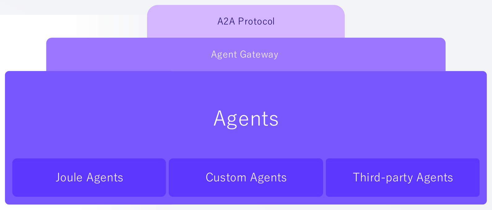

Agent Workflow
& Governance
Agent · Tool 실행 조율 · 권한·승인·정책·추적 적용
Orchestration · Policy · Audit
Harness의 실행 경로 조율 · 권한·정책·승인 기반 Agent · Tool 연결
Agent · Tool 실행 조율 · 권한·승인·정책·추적 적용
Orchestration · Policy · AuditSAP Data · Wiki · Knowledge Graph를 Harness의 판단 근거로 연결
SAP Data · Wiki · Knowledge GraphApp Builder로 변경 구현 · 검증된 App과 기능 재사용
App · Skill · WorkflowJoule · API · Skill로 업무 실행 · Harness의 검증·예외 처리
Act · Validate · Record